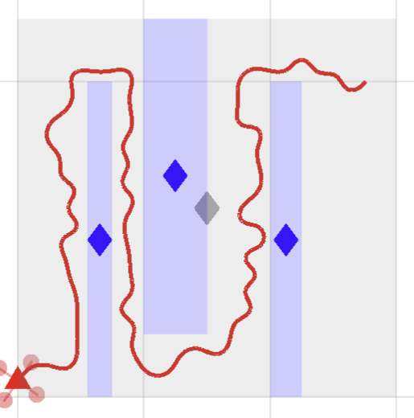
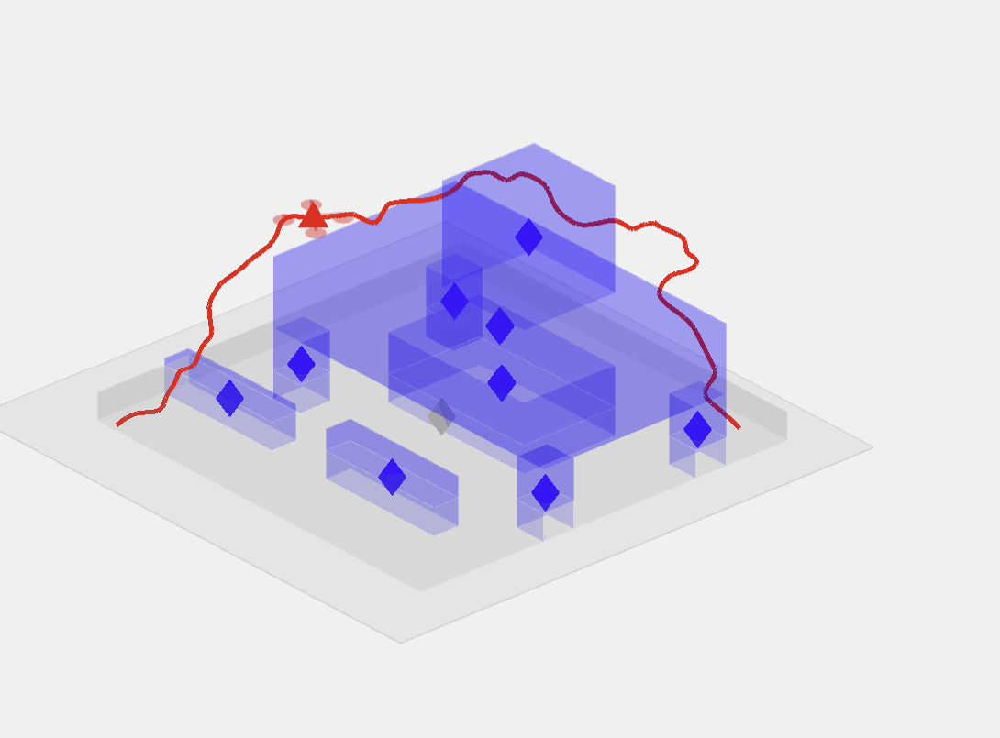
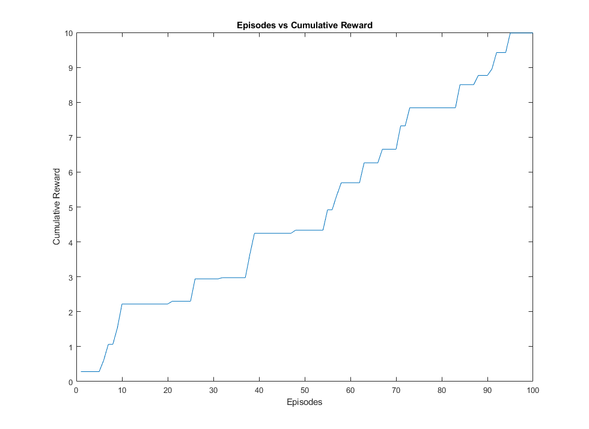

Charlie DeLorey page de projets de site-web
à l'acceuil
N.B. : cette page est mise à jour périodiquement. Revenez plus tard pour en savoir plus.
2022:
« Rapidly-exploring Random Trees » pour les drones dans un environnement urbain
Cliquez pour en savoir plus
Repo
Professeur : Professor Roberto Tron
Départment de l'ingénerie mécanique, Boston University
Projet final de ME570: Robot Motion Planning. Nous avons mis en œuvre des algorithmes RRT et RRT* en 2D et 3D et les avons appliqués en simulation. Les résultats des performances ont ensuite été comparés à des algorithmes optimisés préconstruits à partir de la boîte à outils MATLAB/Simulink UAV.

Simulation de RRT en 2D

Simulation de RRT* en 2D

Simulation de RRT en 3D
2021:
Thèse MRes : Actionneur de robot souple avec détection de forme intégrée via la tomographie d'impédance électrique (TIE)
Cliquez pour en savoir plus
Repo
Directeurs de thèse : Drs. James Avery, Mark Runciman, Saina Akhond, George Mylonas
Le Hamlyn Centre, Imperial College London
Ce projet a nécessité une analyse documentaire approfondie dans le domaine des robots mous, des systèmes de commande et des utilisations de TIE en robotique. Ensuite, des simulations ont été effectuées à l'aide du logiciel de simulation TIE, EIDORS, afin d'évaluer le placement optimal des électrodes nécessaires à la détection le long du corps de l'hypothétique actionneur robotique. En tandem, de multiples itérations d'actionneurs ont été conçues et testées, allant d'actionneurs imprimés en 3D et actionnés par des systèmes hydrauliques à des actionneurs à câble moulés en silicone. Ce dernier a été retenu et équipé d'une chambre de détection remplie de solution saline, qui est le site de production des données du capteur.

Actionneur robotique soulevant un poids de 100g
2020 :
Étude indépendante : main anthropomorphe imprimée en 3D et intégrée à un logiciel intermédiaire, ROS
Cliquez pour en savoir plus
Repo [PDF]
Professeur : Dr. Jivko Sinapov
Départment d'informatique, Tufts University
Travail indépendant pour concevoir, fabriquer et programmer une main robotique à 5 doigts, imprimée en 3D et commandée par câble.
La main est ensuite contrôlée à l'aide d'un Arduino Uno fonctionnant comme un nœud ROS Serial, capable d'envoyer/recevoir des commandes conjointes via une connexion série.
Ce nœud ROS peut être intégré à n'importe quel projet ROS dans lequel un manipulateur à doigts est souhaité. Avec un peu plus de temps, la conception et le code de cette main de robot auraient été affinés et testés à l'aide d'un bras robotique UR5 pour des expériences simples de saisie et de positionnement.

Vue détaillé des doigts robotiques

Vue en dessus des doigts robotiques avec les servoélectroniques
Modèle d'Ising : projet pour le cours optionnel de physique informatique
Cliquez pour en savoir plus
Repo
Professeur : Dr. Timothy Atherton
Département de physique et d'astronomie, Tufts University
Réalisé dans une équipe de trois personnes, nous avons développé et mis en œuvre un modèle de calcul discret du ferromagnétisme initialement formulé par Ernst Ising et Wilhelm Lenz. Écrit en Python (Jupyter Notebook), le travail fourni montre une simple simulation de réseau 2D. En outre, j'ai construit un exemple simple de réseau Hopfield, un modèle de calcul représentant la façon dont les neurones apprennent et stockent des informations, un modèle de mémoire biologique. Ce réseau fonctionne de manière similaire au modèle d'Ising, où chaque élément individuel des modèles a une interaction avec son voisin.

Visualisation d'un modèle simple d'Ising
2019 :
Agent d'apprentissage de préhension conforme à l'apprentissage par renforcement
Cliquez pour en savoir plus
Professeur : Dr. Jivko Sinapov
Départment d'informatique, Tufts University
Ce projet était l'évaluation finale du cours COMP 150: Reinforcement Learning (RL). Mon groupe de projet et moi-même avons développé un agent d'apprentissage avec un schéma d'apprentissage MAB (Multi-Armed Bandit) pour apprendre la configuration optimale des pinces pour ramasser des objets. Par manque de temps, nous n'avons pu tester notre agent que sur une balle de tennis dans notre dispositif expérimental. Afin de permettre une exploration satisfaisante de l'espace d'action, nous avons fait en sorte que la probabilité de choisir l'exploration soit très élevée. Pour ajouter de l'exploration supplémentaire, nous avons intégré une fonction de mutation qui modifie la valeur maximale actuellement trouvée, afin d'exagérer la différence entre la meilleure action actuellement choisie et d'autres de même valeur mais situées à des endroits différents dans l'espace d'action.

Visualisation en 2D des valeurs Q dans l'espace d'action

Visualisation en 3D des valeurs Q dans l'espace d'action

Graphique linéaire de la récompense cumulée sur 100 épisodes
2014 :
Hospital Simulator : Jeu vidéo de type roman visuel simulant le diagnostic du médecin et l'expérience de soins aux patients dans un hôpital.
Cliquez pour en savoir plus
NuVu Studio, Cambridge, MA
Ce projet de deux semaines a été réalisé dans le cadre du projet « Médecine du futur ». Inspiré par les romans visuels et les jeux de type « choisir sa propre aventure », le jeu a pour but de fournir une expérience interactive du rôle de prestataire de soins dans un environnement médical. Le choix de graphiques en pixels a été fait pour simplifier les exigences artistiques et pour évoquer l'esthétique des jeux « rétro » ou d'arcade. Les développements futurs de ce jeu incluent l'élargissement des connaissances médicales et des diagnostics disponibles, ainsi que l'incorporation de scénarios médicaux supplémentaires pour toucher à l'étendue du domaine médical. Des études littéraires ou d'autres études de fond sur les programmes de simulation médicale et hospitalière existants seraient également étudiées, afin de découvrir les domaines de nouveauté dans lesquels ce projet de simulation pourrait être orienté.

écran titre du simulateur d'hôpital

Waiting room

Waiting room

Gameplay flow diagram

Menu des équipements